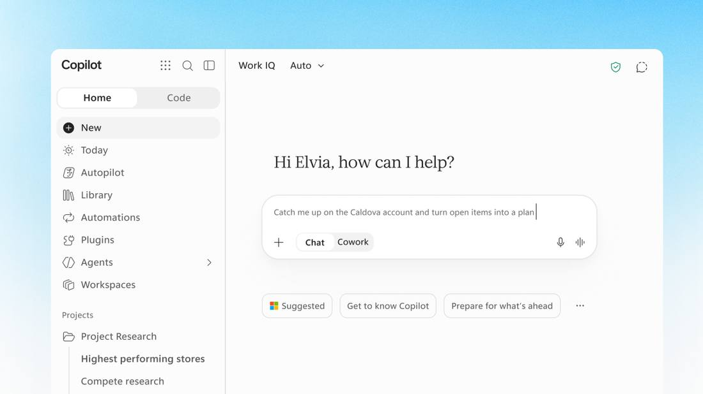

Microsoft Ignite 2026: Copilot Goes GA, Autopilot Rolls Out, Salesforce Joins In
Microsoft used the Ignite 2026 keynote on November 17 to make the new Copilot generally available, with Home and Office in Copilot live, Autopilot rolling out to Frontier customers, and Copilot Code coming in the following weeks. It also announced Copilotforce, a partnership bringing Salesforce into Copilot with more than 38 pre-built sales skills, plus Dynamics 365 in Copilot, an expanded Agent 365, Microsoft-Decision-1.1, Microsoft Perception, Cobalt 200 virtual machines and Azure Catalyst.

- 01THE KEYNOTE — Satya Nadella opened Ignite 2026 on November 17, framing Copilot as the new operating system for work and the announcements around human ambition, intelligence and trust.
- 02COPILOT GOES GA — The new Copilot reached general availability: Home, where Chat and Cowork come together, and Office in Copilot are live; Copilot Managed Runtime is generally available; Autopilot began rolling out to Frontier customers; Copilot Code follows in the coming weeks.
- 03THE SALESFORCE PACT — Salesforce and Microsoft announced Copilotforce at Ignite: Salesforce in Microsoft Copilot in public preview with more than 38 pre-built sales skills, Sales Cloud in Teams in pilot, and Data 360 connected to Microsoft Fabric with bidirectional zero-copy access. Accenture is design partner and customer zero.
WHAT HAPPENEDWhat Happened
Microsoft used the opening keynote of Ignite 2026 on November 17, 2026 to declare Copilot the new operating system for work, moving it from an assistant that answers questions to a system that carries work forward on its own. Chief executive Satya Nadella framed the shift around three traits: human ambition at the center, ownership of an organization's intelligence, and trust. The keynote, which ran into the evening UTC, put general availability, autonomous agents and a repaired relationship with Salesforce at the center of the program.
The core of the announcement is the new Copilot. Home, where Chat and Cowork come together, is now generally available, and Office is now built directly into the Copilot app. Copilot Code, which lets people build dashboards, trackers and apps in natural language, reaches general availability in the coming weeks, while Copilot Managed Runtime for securely hosting and managing apps is generally available now. Autopilot, a long-running agent that manages recurring tasks and moves projects forward without being prompted at every step, began rolling out to Frontier customers on November 17. A new Today experience inside Home is in private preview in the Copilot app and Outlook.
The most consequential partnership news is Copilotforce. Salesforce and Microsoft announced it at Ignite on November 17, bringing Salesforce into Microsoft's productivity ecosystem after years of rivalry. Salesforce in Microsoft Copilot is a plugin in public preview with more than 38 pre-built sales skills, letting sellers ask natural-language questions, analyze opportunities, prepare for meetings and take CRM actions inside Copilot, grounded in Teams conversations, Outlook email and shared documents. Sales Cloud in Teams, which brings CRM insights into Teams, is in pilot, and Salesforce Data 360 connects to Microsoft Fabric through bidirectional zero-copy data access. Accenture is the design and implementation partner and customer zero, deploying the integrations across its global sales organization; it reports rolling out Copilot to more than 740,000 people and having 55,000 Salesforce users.
Microsoft also announced Dynamics 365 in Copilot, with updated plugins for Dynamics 365 Sales, Service, and Finance and Operations, and expanded Agent 365, adding Business Analytics so leaders can see what their AI costs and what it delivers, from task success to hours assisted. On the model side, Microsoft-Decision-1.1, a fast, low-cost decision model for routing, classification, prioritization, verification and workflow control, is now generally available, alongside new models for coding, cyber, image and audio. Microsoft Perception, which brings together specialized agents to find, defend and remediate vulnerabilities, powered by models including the MAI-Cyber line, is generally available. Cobalt 200 virtual machines, generally available today, deliver up to 50 percent better performance than the previous generation and will reach 23 regions by year end. Azure Catalyst brings Azure and GitHub agentic tools together in one connected experience. Microsoft cited Volkswagen Group equipping more than 330,000 employees with Copilot and The Estee Lauder Companies expanding it to more than 14,000 people.
WHY IT MATTERSThe assistant era is over; the agent era has a price tag
Every element of the Ignite package points the same way: from answering to acting. Autopilot is the clearest marker, an agent that keeps working on recurring tasks without being prompted, and Copilot Code hands app-building to the people closest to the problem. Microsoft is betting that the next unit of enterprise value is not a better answer but a finished task, and it is shipping the governance to match: Agent 365 Business Analytics, Execution Containers, built-in agent identity with Entra support, and Agent 365 policies enforced on every device.
The Salesforce deal is the tell. Two companies that spent years competing for the same enterprise budgets are now wiring their systems together, with zero-copy data sharing between Data 360 and Fabric and CRM actions executable from inside Copilot. That only happens when both sides believe the agentic layer, not the application, is where the next decade of lock-in lives. Whoever owns the agent's working context owns the workflow.
WHAT TO WATCHWhat to watch after the keynote
First, whether Copilot Code lands on schedule in the coming weeks and whether Autopilot's Frontier rollout produces real usage rather than demo usage; long-running agents that act without prompting are exactly the systems that surface trust failures first. Second, whether the Salesforce integration survives contact with real sales organizations: 38 pre-built skills is a starting catalog, not a proven workflow, and Accenture as customer zero is a friendly first deployment.
Third, the infrastructure economics. Cobalt 200 at up to 50 percent better performance and Microsoft-Decision-1.1 as a cheap routing model both point at the same problem: agentic workloads are expensive to run, and Microsoft is attacking cost from the silicon and the model side at once. The Ignite Book of News carries the full announcement list, and the sessions continue through the week.
SIGNAL JUDGMENT — ANALYSISThe operating system for work is now an agent
Tokenta Signal's judgment: Ignite 2026 is Microsoft's cleanest statement yet that the assistant era is over. The company is no longer selling a better way to ask questions; it is selling a system that finishes tasks, governs the agents that do them, and prices the whole estate. The Salesforce partnership is the strongest evidence for that reading: rivals do not wire their data together unless the layer above the application has become the prize. The risk is execution. Autopilot, Copilot Code and 38 sales skills are promises until real organizations run real work through them, and the trust machinery Microsoft announced alongside them will be tested by the first agent that acts wrongly without being asked.
WHAT REMAINS UNCERTAINWhat Remains Uncertain
EVIDENCEEvidence
Microsoft announced the general availability of the new Copilot, including Home and Office in Copilot, at Ignite 2026 on November 17, alongside the Autopilot agent rollout to Frontier customers and Copilotforce, a partnership bringing Salesforce into Microsoft Copilot with more than 38 pre-built sales skills.
PRIMARY SOURCESPrimary Sources
- Microsoft Source: Microsoft Ignite 2026: Empowering human ambition, intelligence and trust
https://news.microsoft.com/source/2026/11/17/microsoft-ignite-2026-empowering-human-ambition-intelligence-and-trust/ - Microsoft Copilot Blog: Copilot at Microsoft Ignite: Expanding what's possible with intelligence built for work
https://www.microsoft.com/en-us/copilot/blog/2026/11/17/copilot-at-microsoft-ignite-expanding-whats-possible-with-intelligence-built-for-work/ - Salesforce: Salesforce and Microsoft Announce Copilotforce
https://www.salesforce.com/news/stories/copilotforce-announcement/
RELATEDRelated Intelligence
- Baidu Publishes ERNIE 5.5 Flash Preview Weights Under Apache 2.0, a Day Early
- Huang Apologizes to Nvidia Staff and Says He Is in Therapy, a Day After His Return
- Amazon Leo LE-04: All 36 Satellites Deployed, Constellation Passes 400 (Update to Issue 511)
- Ariane 6 Lifts Off With 36 Amazon Leo Satellites After One-Day Delay